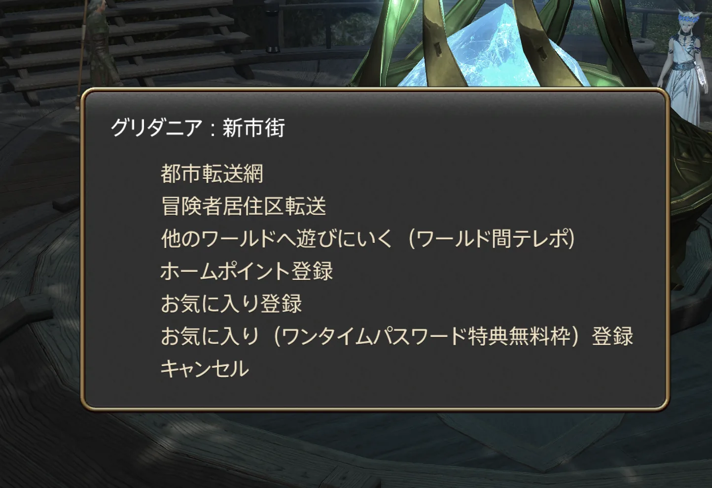

クエストには種類があります
FFXIVでは、クエストのアイコンによって役割が分かれています。すべてのクエストを片っ端から進める必要はありません。まずは、アイコンの違いだけ覚えておくとかなり分かりやすくなります。
メインクエスト
炎のような枠が付いたアイコンがメインクエストです。FFXIVのストーリーを進めるための中心となるクエストで、ダンジョンや新しいエリアなど、多くのコンテンツもメインクエストを進めることで利用できるようになります。
迷ったときは、まずメインクエストを進めれば大丈夫です。

青い＋付きクエスト
青い背景に＋マークが付いたアイコンは、新しい機能やコンテンツが解放されるクエストです。例えば、新しいダンジョン、染色、装備の見た目変更機能（ミラプリ）、各種ゲーム機能などにつながるものがあります。
見かけたから必ずその場でやらなければならないわけではありませんが、気になるものがあれば受けてみるのがおすすめです。
通常クエスト
メインクエストや青＋ではない一般的なクエストです。地域の人物や出来事を知れたり、経験値やアイテムなどの報酬を受け取れます。
すべてクリアする必要はありません。その地域をもっと知りたいときや、寄り道したいときに遊んでみてください。
エーテライト
大きな青いクリスタルがエーテライトです。新しい街やエリアへ到着したら、見かけたエーテライトには一度触れておきましょう。交感しておくことで、その場所をテレポの行き先として利用できるようになります。
新しい場所に着いたら、まずエーテライトを探して触れておくと、その後の移動がかなり楽になります。

ホームポイント
エーテライトでは、ホームポイントを設定できます。ホームポイントは、戦闘不能になったときに「デジョン」を選択した場合などの帰還先になります。
よく活動する都市や、現在ストーリーを進めている地域の近くに設定しておくと便利です。

所持品は早いうちから整理しておく
ゲームを進めていると、装備・素材・消耗品など、かなり多くのアイテムを手に入れます。全部を残しておく必要はありません。
基本的な考え方
- 現在使っている装備
- すぐ使う予定のあるアイテム
- 明確に用途が分かっているアイテム
は残しておいて問題ありません。一方で、低レベルの一般素材、もう使わない古い装備、NPCやマーケットですぐ買えるものなどは、必要になってから再入手できる場合も多くあります。
「せいとん」を使う
所持品には自動で並べ直してくれる「せいとん」があります。アイテムが増えて見づらくなったら、まず使ってみてください。
装備はいつ更新する？
戦闘職
ストーリーを進めて敵が強くなってきた、受けるダメージが増えてきた、と感じたら装備を確認してみましょう。キャラクター画面の「さいきょう」を使えば、現在所持している装備の中から自動で装備を選ぶこともできます。
クラフター・ギャザラー
クラフターやギャザラーでは、レベルだけではなく装備による能力値の影響が大きくなります。製作や採集が難しくなってきたら、レベルを上げるだけでなく装備も確認してみてください。

ホットバーは自由に変更できます
ホットバーは、アクションを置くだけのものではありません。
- アクションの位置を変更する
- ホットバー自体を移動する
- 横長・縦長など形を変更する
- 必要なホットバーだけ表示する
- マウント、エモート、アイテム、ギアセット、テレポなどの機能を登録する
最初から用意されている配置に合わせ続ける必要はありません。自分が見やすく、使いやすい形へ少しずつ変えていくのがおすすめです。
クラスとジョブ
FFXIVでは、最初に選んだクラスをずっと使い続ける必要はありません。ゲームを進めることで、1人のキャラクターで複数の戦闘ジョブ、クラフター、ギャザラーを遊べるようになります。
「最初に選んだから、このジョブを最後まで使わなければいけない」ということはありません。気になるジョブがあれば、途中から試してみても大丈夫です。
ギル
ギルはFFXIVの基本的なお金です。 序盤から無理に大量に稼ぐ必要はありませんが、アイテムを購入するときにひとつ覚えておくと便利です。
マーケットで買う前に少し確認
マーケットボードで高い値段が付いていても、NPCが安く販売しているアイテムがあります。「マーケットで高い＝入手が難しい」とは限りません。高いアイテムを購入するときは、一度入手方法を確認してみると無駄な出費を防げます。
チャット
FFXIVには用途に応じた複数のチャットがあります。
テキストコマンド
チャット欄ではコマンドを使うこともできます。例えば /p よろしくお願いします！ と入力すると、Partyチャットで「よろしくお願いします！」と送信できます。
チャットモードを切り替えなくても一時的に送り先を指定できるので、慣れてくると便利です。
パーティに誘う・誘われる
他のプレイヤーを選択すると、メニューからパーティへ誘うことができます。逆に、自分が招待された場合は、画面に表示されるパーティ招待から参加できます。
パーティに入ると、画面上にパーティメンバーのHPや状態が表示されます。パーティ中の会話にはPartyチャットを使うと便利です。
最初のダンジョンへ行く前に
ダンジョンが解放されたら、コンテンツファインダーから参加できます。初めてでも、そのまま参加して問題ありません。
ただし、初めてダンジョンへ行く前に初心者の館を一度遊んでおくのがおすすめです。
初心者の館では、自分のロールの基本、戦闘中に意識すること、パーティプレイの基礎などを実際に操作しながら確認できます。